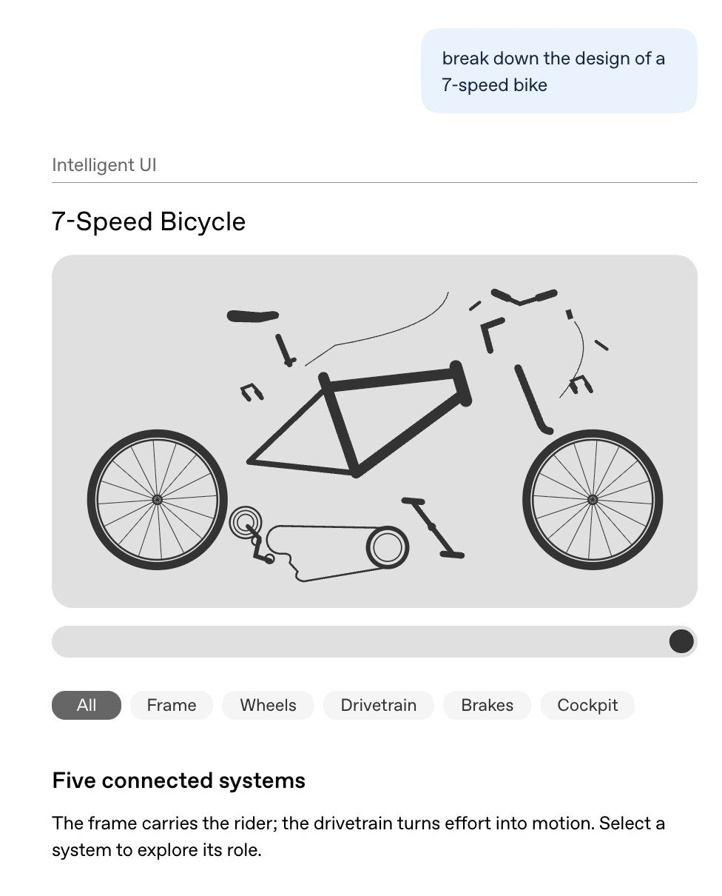
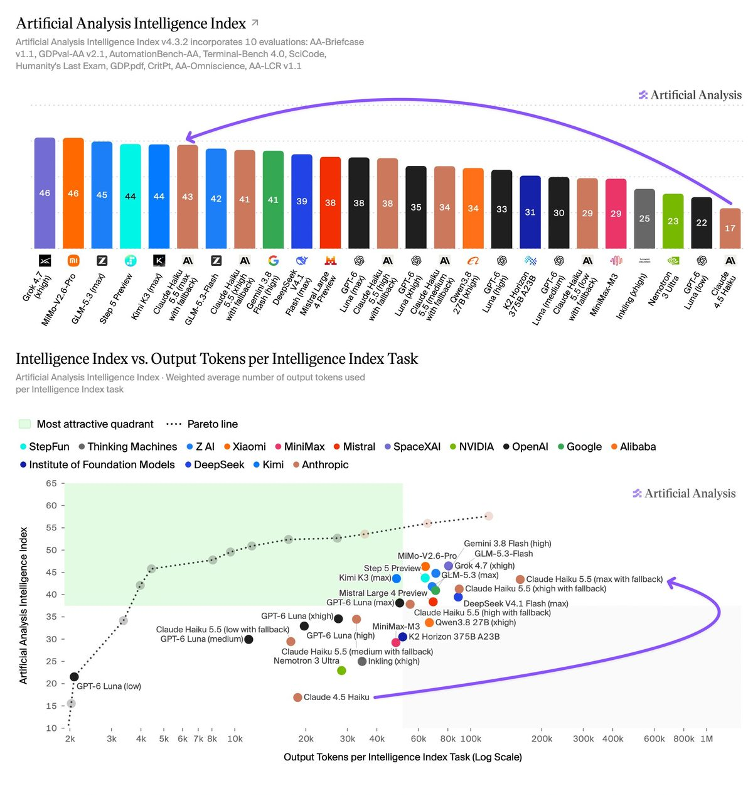
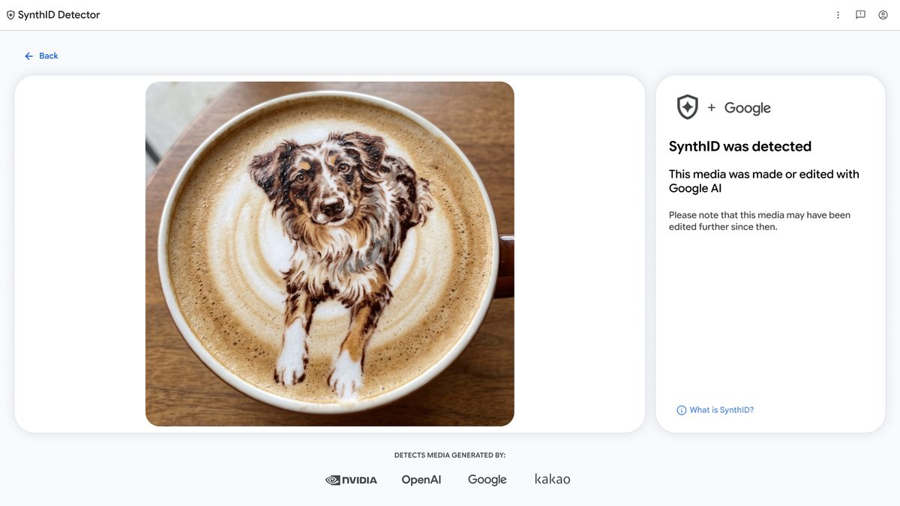
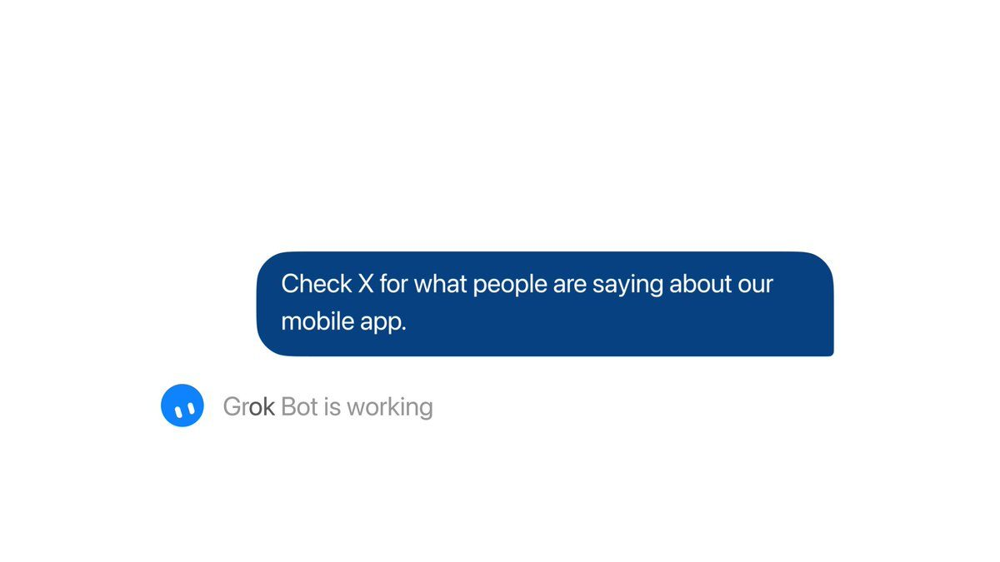
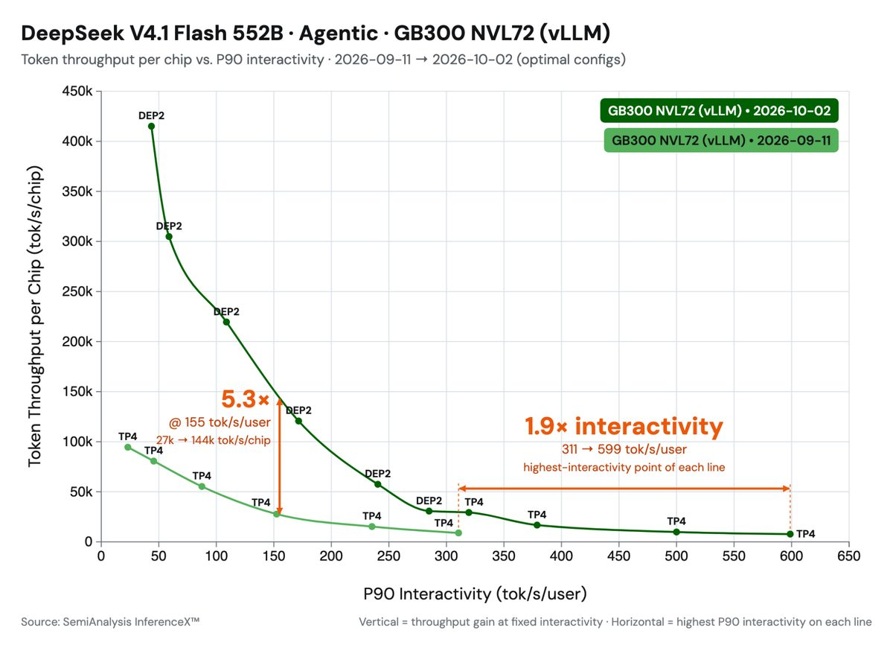
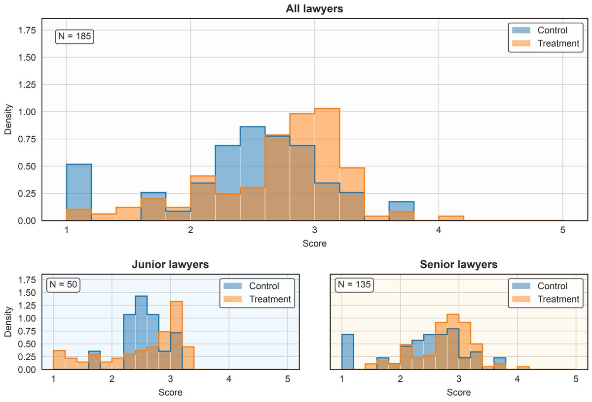

01产品 头条未证实项
GPT-6 推向 ChatGPT 全部用户，回答会自己「长出」界面
10-08 02:05 北京时间AIHOT 热榜 #3独立来源 3 家

ChatGPT 官方示例：拆解 7 速自行车结构，可点选各个部件系统
介绍
OpenAI 把 GPT-6 推给 ChatGPT 全部用户，同时上线 Intelligent UI：模型按问题把文字、图形、图表、按钮、表单和可交互组件组合起来作答，还能当场做出计算器、账单分摊器这类小工具。Plus / Pro / Business / Enterprise 当天起全球推送，Free 和 Go 次日跟进；付费档由 GPT-6 Sol 驱动，免费档由 GPT-6 Luna 驱动。
为什么重要
ChatGPT 的默认回答第一次从「一段文字」变成「按问题生成的界面」，而且直接面向每周 12 亿以上用户。对做 AI 应用和前端的人，这意味着生成式界面从演示走向主流。
要点
- 实现方式：一套原生、可流式渲染的组件库，加一个边生成边出界面的编译器，界面随回答逐步出现
- 需要联网的问题，GPT-6 Instant 比 GPT-5.6 Instant 平均早 44% 开始回答（OpenAI 内部评测，衡量的是开始回答的时间）
- 只改 Chat 标签页，Work 和 Codex 用的模型不变；Enterprise 是否可用由管理员决定
- 同日 OpenAI 的 Tibo 称 Codex 与 ChatGPT Work 合计活跃用户达 4000 万，并给付费账户发放一次额度重置（未经官方页面证实，仅员工本人发帖）
⚠ 4000 万活跃用户：未经官方页面证实
02模型
Claude Haiku 5.5：100K 以内每百万 token $0.10 / $0.50，平均便宜约 75%
10-08 02:01 北京时间AIHOT 热榜 #1独立来源 4 家

Artificial Analysis：智能指数排行（上）与智能指数 vs token 用量（下）
介绍
Anthropic 发布 Claude Haiku 5.5，定位最便宜、最快的小模型，适合摘要、上下文压缩、分类、数据库查询，以及给 Opus / Sonnet 当编码子智能体。提示在 10 万 token 以内时，每百万 token 输入 $0.10、输出 $0.50（Haiku 4.5 是 $1 / $5）；超过 10 万 token 跳到 $0.50 / $2.50。官方称平均运行成本比 Haiku 4.5 低约 75%，上下文 1M。
为什么重要
小模型价格进入「一毛钱」区间，再加上同日的缓存降价和订阅附送 API 额度，Anthropic 明显在抢高吞吐智能体和子任务这块流量。要留意：长提示的单价是短提示的 5 倍。
要点
- Artificial Analysis 智能指数 43，比一年前的上一代 Haiku 高 26 分
- 同日 Sonnet 5.5 缓存读取价减半：每百万 token $0.20 → $0.10，官方估算多数智能体任务成本降约 20%
- Max / Team 订阅送每月 API 额度：Max 5x $100、Max 20x $200、Team 最多 $500（共享）；任何模型可用，但不覆盖交互式 Claude Code，当月不累积
- Claude 的 Python / TypeScript SDK 内置 computer use 和 browser use 工具（beta）
03产业
NVIDIA × 微软：RTX Spark 笔记本开订，Windows 给智能体上系统级容器
10-08 02:17 北京时间AIHOT 热榜 #9（Dev Box）独立来源 2 家
黄仁勋与纳德拉在旧金山活动现场，身后是 RTX Spark 笔记本
介绍
在旧金山的 Windows AI 与 Surface 活动上，黄仁勋和纳德拉同台。NVIDIA RTX Spark 提供 1 PFLOP FP4（稀疏）算力、最高 128GB 统一内存；微软 Surface Laptop Ultra 起售 $2,599，10 月 16 日上市。微软同时宣布 MXC（Microsoft Execution Containers） 正式可用，让智能体在系统管控下在后台持续运行。
为什么重要
本地跑大模型加系统级智能体沙箱，是 Windows 阵营对「智能体时代的 PC」的正式回答；同一套 CUDA 软件栈能从笔记本一路用到桌边工作站。
要点
- Surface RTX Spark Dev Box 售价 $5,999，仅美国微软官网，11 月发货
- Acer、ASUS、Dell、HP、Lenovo、MSI 等都会出 RTX Spark 机型；紧凑台式机 11 月开卖
- 纳德拉称 137B 参数、256K 上下文的 MAI-Code-1.1 Flash 已能在 PC 本地跑；NVIDIA 称可本地运行 125B 的 Qwen 3.8 Flash Next
- DGX Station for Windows 预览：GB300、748GB 一致性内存
04安全
Google SynthID 检测器全球开放，可查 OpenAI 等合作方的水印
10-07 22:03 北京时间AIHOT 热榜 #8独立来源 4 家

synthid.com 检测结果页：识别出图片带有 Google 水印
介绍
Google 把 SynthID Detector 向全球开放（英文），上线 synthid.com：上传图片、视频或音频，就能检查是否带有 SynthID 隐形水印。新版也支持合作方 OpenAI、NVIDIA、Kakao 的水印，Apple 即将加入。
为什么重要
这是第一个能跨厂商核查主流 AI 生成内容的公开入口，对媒体核查和平台审核有实际用处。但它只认 SynthID：查不到不代表内容是真的。
要点
- 自 2023 年以来已给 1800 亿+ 张图片和视频、24 万年的音频加上 SynthID
- 需要登录（Google、OpenAI、Apple 账号均可），每人每天约 10 次检测
- 网站只给「有 / 无水印」的结论，不再像内部工具那样标出水印区域
- Search、Gemini、Chrome 内置的核查功能每天处理 100 万+ 次请求
05产品未证实项
Grok Bot 改为按任务挑模型，并能直接搜索、监控 X
10-07 14:46 / 10-08 05:40 北京时间AIHOT 热榜 #5、#10独立来源 3 家

Grok Bot 官方演示：让它去 X 上看用户怎么评价移动应用
介绍
马斯克在 X 上称，SpaceX 今后会针对每个任务给 Grok Bot 选最合适的后端模型，点名 Claude Opus 5.5、Midjourney、Suno 等外部 API；简单请求将来交给 Grok 4.8 的快速版处理。同一天 @bot 官方账号宣布 Grok Bot 可以直接搜索、阅读和监控 X，不需要先接 X 连接器。
为什么重要
自研模型的公司公开说「哪家好用哪家」，说明智能体产品的竞争重心正从自家模型转向调度和体验；原生 X 访问则给了它一个实时数据入口。
要点
- 模型路由目前只有马斯克本人的表态，范围、接入方式都未正式公布
- Testing Catalog 称以前只能靠网页搜索或 X 连接器，现在一条提示词能分析 100 多条帖子
- 读个人时间线、提及等个人数据仍需连接自己的 X 账号
- 可以起草帖子，但不直接发帖，需要用户自己确认发送（据 TeslaNorth 转述官方回复）
⚠ 模型路由：仅马斯克发帖，无官方页面
06产业未证实项
Waymo 完成 50 亿美元定期贷款，是它第一次借债融资
10-08 21:48 北京时间AIHOT 10-09 期独立来源 3 家
介绍
Waymo 宣布完成 50 亿美元定期贷款，这是它第一次债务融资。PIMCO、Blackstone、Sixth Street 任牵头银团贷方，高盛任唯一牵头账簿管理人；资金用于加速自动驾驶打车服务在美国和海外扩张。
为什么重要
Robotaxi 从「靠股权烧钱」走到「能借到钱」，说明大机构开始把 Waymo 当成可放贷的商业公司来看，这对整个自动驾驶赛道的融资方式是个信号。
要点
- 今年早些时候 Waymo 刚完成 160 亿美元股权融资；路透称当时估值 1260 亿美元（Waymo 博客未提估值）
- 上个月在美国第 15 个城市上线服务，并宣布新的海外城市
- Capital Group、Loomis Sayles、T. Rowe Price 为重要贷方；利率、期限等条款未披露
⚠ 1260 亿美元估值：仅路透报道，官方未提
07技巧
vLLM 三周把 DeepSeek V4.1 Flash 的智能体吞吐提到 5.3 倍
10-08 04:42 北京时间独立来源 2 家

GB300 NVL72 上的单芯片吞吐 vs 每用户交互速度，标注 5.3× 与 1.9× 提升
介绍
Inferact 与 vLLM 社区在 DeepSeek-V4.1-Flash 发布后三周内做了一轮优化：低并发速度提升 1.9 倍；在 SemiAnalysis AgentX 智能体基准、每用户 150 TPS 的约束下，吞吐提升 5.3 倍。提升主要来自 SWA bounded replay（首 token 延迟降约 30%）和一批新内核与算子融合。
为什么重要
智能体场景的成本大头是长上下文的反复预填充。这篇把「只重算最后 128 个 token」讲得很清楚，思路能搬到别的模型服务上。
要点
- V4.1 解码时每 token 激活 16B 参数，预填充只激活 8B
- 全局 KV 压缩、跨层共享并以 FP4 存储，约 890 字节/token
- 长提示下第 21–39 层只跑最后 128 个 token，几乎跳过半个模型
- 重放不是逐位精确，但 GSM8K、GPQA 上没有明显精度差；默认开启
08研究
Google 律师实验：AI 让作品变好，却没让新人变强
10-08 04:23 北京时间独立来源 3 家

无 AI 审改得分分布：对照组（蓝）vs 用过 AI 的组（橙），分全部、初级、资深
介绍
David Autor 等人在 NBER 发表三个月随机田野实验：11 家知识产权律所的 133 名律师中，约三分之二被随机开放 AI 专利写作助手。用 AI 起草时质量普遍提升（10 天 +0.34 个标准差，90 天 +0.38）；但在第 90 天禁用 AI 的审改测试里，提升全部来自资深律师，初级律师平均没有进步。
为什么重要
这是少见的严谨证据：AI 能让新人交出及格作品，但不会自动带来判断力。对律所、咨询、软件团队怎么带新人，是很直接的提醒。
要点
- 初级律师起草明显提速：10 天任务比对照组平均 124 分钟快 18 分钟
- 无 AI 审改时初级律师分数两极化：很差的更多、中等的更少
- 资深律师把 AI 当「逻辑审计员」，直接重写权利要求；初级律师常常只批注、不动手改
- 局限：样本小、只看三个月
NVIDIA Nemotron 微调后 IOI、IMO 2026 双达金牌线10-07 20:45Nemotron-3-Ultra-CC 在 IOI 得 535.4/600（金牌线 361.12，属非官方实测）；IMO 系统拿到 30/42（金牌线 29）
Perplexity 开源 pplx-embed-v2-late10-08 00:099B 与 0.6B 两个多向量嵌入模型共享同一空间，9B 建索引、0.6B 在端侧查询，无需 OCR 就能检索 PDF 页面
Codex cloud 悄悄重新上线10-08 14:38OpenAI 的 Tibo 发帖称 Codex cloud 已重新上线（未经官方页面证实）
微软亚研开源 Agent Lightning v1.0AIHOT 10-08 期约 3500 行代码，让部署时用的智能体 harness 直接参与强化学习，不用在训练框架里重写智能体
a16z：德州数据中心排队等电AIHOT 10-08 期并网队列从 2024 年底的 63 GW 涨到今年 6 月的 474 GW，约 90% 是数据中心
美国法院：AI 生成的受害者视频影响量刑AIHOT 10-08 期亚利桑那上诉法院维持过失杀人定罪，但认定量刑听证播放的 AI 受害者视频带有「不当情感分量」，须重新量刑
Stanford HAI：别把 AI 当效率工具推AIHOT 10-08 期以「丰富工作」名义引入 AI 的律所部门，使用量高 58%、尝试新用法多 70%
LlamaIndex 发布 OpenDocRouterAIHOT 10-08 期一个 API 调用 5 个前沿模型和 5 个开源模型，把文档解析成 Markdown，附质量与每千页成本对比
Google 实验性游戏平台 PlaygroundAIHOT 10-08 期用文字提示词就能创建、游玩和分享自定义游戏，不需要编程
AIHOT 日报 10-08 / 10-09 + 热榜读到
10-08 期（10-07 08:00 → 10-08 08:00）全部可用；10-09 期只取 10-08 白天发生的条目（如 Waymo）
X 公开数据（官方账号原推 / 搜索）读到
每条主线都有原推；评论按推文 id 回填作者
你在 10/8 发的推文（@HhhharryRen）读到 · 没更新
接口正常返回，当天 0 条
WaytoAGI 飞书知识库读到
10 月 8 日共 7 条，1 条与主线 1 重合，其余为教程/工具，收入「社区精选」，未逐条核对数字
官方页面核对读到
openai.com、anthropic.com、claude.com、blogs.nvidia.com、blogs.windows.com、blog.google、waymo.com、vllm.ai、research.google、nber.org
媒体交叉（WebSearch）读到
The Verge、Engadget、TechRepublic、Ars Technica、SiliconANGLE、TNW、Reuters、TechCrunch、TeslaNorth 等